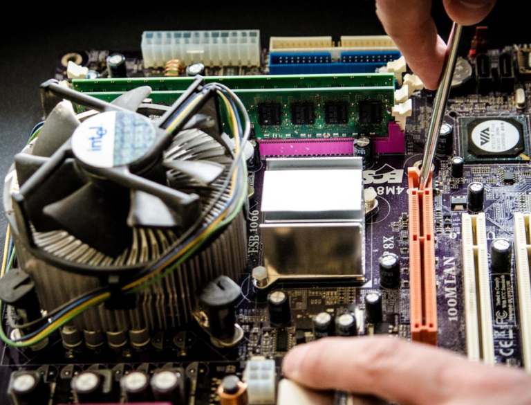

W naszym serwisie przede wszystkim zajmujemy się naprawami komputerów stacjonarnych, laptopów czy netbooków. Serwisujemy komputery które samoczynnie odmówimy posłuszeństwa bądź też po uszkodzeniach mechanicznych czy zalaniach.
Jeżeli komputer przestał się włączać bądź system nie chce się uruchomić czy pokazuje błędy – jesteśmy w stanie odzyskać z niego Państwa bezcenne dane i dokonać ich kopii, a następnie przywrócić komputer do poprzedniego stanu.
Przy sprzęcie który po pewnym czasie użytkowania, zaczął wolniej chodzić, uruchamia się wyraźnie wolnej, a praca na nim stała się męcząca – diagnozujemy co jest tego przyczyną, przedstawiamy Państwu odpowiednie rozwiązania i likwidujemy problem. Najczęstszą przyczyną takiego stanu rzeczy jest uszkodzony dysk twardy, bądź niewystarczająca konfiguracja sprzętowa na dzisiejsze czasy.

Serwis Komputerowy Iwo